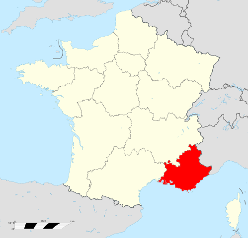

Die Provence ist eine Region im Süd-Osten Frankreichs.
Sie grenzt direkt an Italien und an das Mittelmeer.
Die Grenze zum Mittelmeer ist die Côte d‘Azur.
Die Landschaft ist vielfältig von Bergen,
Weinbergen und Lavendelfeldern geprägt.
Die Provence ist reich an Geschichte, Kunst und Kultur, Malerei, Architektur, Dichtung sowie für die provenzialische Küche.
Bekannte Städte sind Marseille, Avignon, Cannes, Nizza und Arles.
Besondere Sehenswürdigkeiten der Provence sind die Pont du Gard, der Papstpalast von Avignon,
die Calanques,
die Lavendelfelder ebenso wie die Strände an der Côte d‘Azur.

Die Geschichte der Provence begann um ca. 600 v. Chr. mit der systematische Kolonialisation durch die Griechen.
Dadurch entstand die Hafenstadt Massalia, welche heute als Marseille bekannt ist.
Entlang der gleichen Küste entsandten aufgrund der Lage am Mittelmeer zahlreiche weitere Städte und Siedlungen.
Ab ca. 200 v. Chr. Begann die Epoche der Romanisierung. Diese Epoche, welche etwa 600 Jahre andauerte, war kurz gesagt von sehr vielen Kriegen geprägt.
Der Auslöser dieser war oft das Imperium Romanum und die daraus resultierende Machtgier der Herrscher.
Nach dem Zerfall des Imperium Romanum wurde die Provence hauptsächlich durch Fürstentümer und Grafschaften regiert,
später wurden viele Fürstentümer und Grafschaften an denn französischen König Ludwig XI. überführt.
Einige wenige Grafschaften und Fürstentümer bestanden noch bis ins Jahr 1791 und wurden im Zuge der französischen Revolution ebenfalls übernommen.
Im Verlauf des 19. Jahrhundert erlebte die Provence einen wirtschaftlichen Aufschwung und es wanderten immer mehr fremde in die Provence ein.
Während des Zweiten Weltkriegs war die Provence ein beliebter Zufluchtsort für Gegner des Nazi-Regimes,
Intellektuelle und wurde zum Schauplatz einiger Widerstandsbewegungen.
Die Quellen (beide Wikipedia):
Quelle1
Quelle2
Hier gehts zurück!